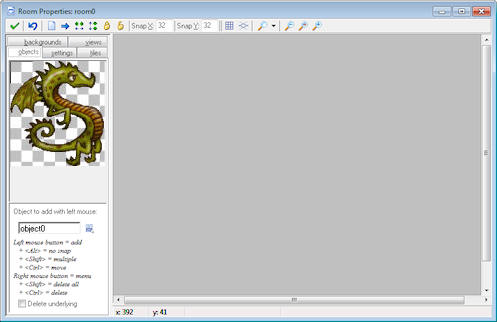

As you will see, some new buttons have been added to the toolbar. There are buttons to sort the instances horizontally or vertically. This is useful when instance partially overlap. (When adding tiles these buttons and the others work on the tiles rather than the instances.) Also there are buttons to lock all instances or unlock all instances. Locked instances cannot be moved or deleted. This protects you against incidentally removing instances. (However, when using the toolbar buttons to delete or shift all instances, also the locked ones are deleted or shifted.) Using the right mouse button menu (hold <Ctrl> and right click on an instance) you can also lock or unlock individual instances.
Finally, you can indicate that you want to use an isometric grid. This is very useful when creating isometric games. First of all, the grid lines now run diagonally. Also the snapping of instances is different. (It works best when the origin of the instance is at the top left corner as is default.)
Also there are two new tabs which we will discuss below.
Information on the different advanced room options can be found in the following pages:
Advanced settings
Adding tiles
Views
| Converted from CHM to HTML with chm2web Pro 2.85 (unicode) |